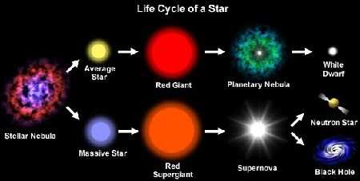
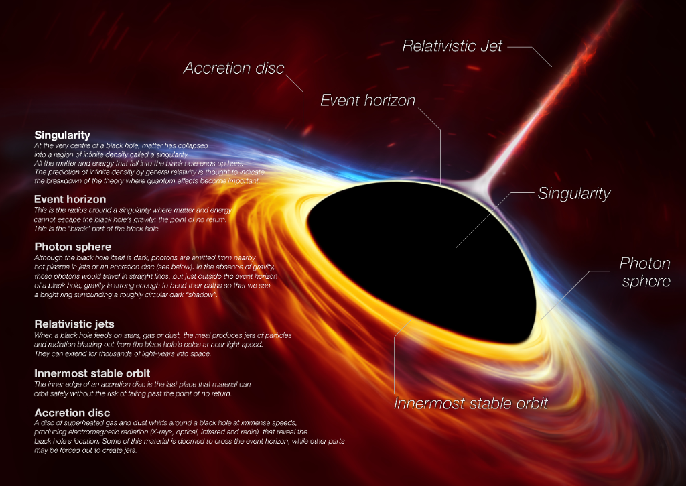
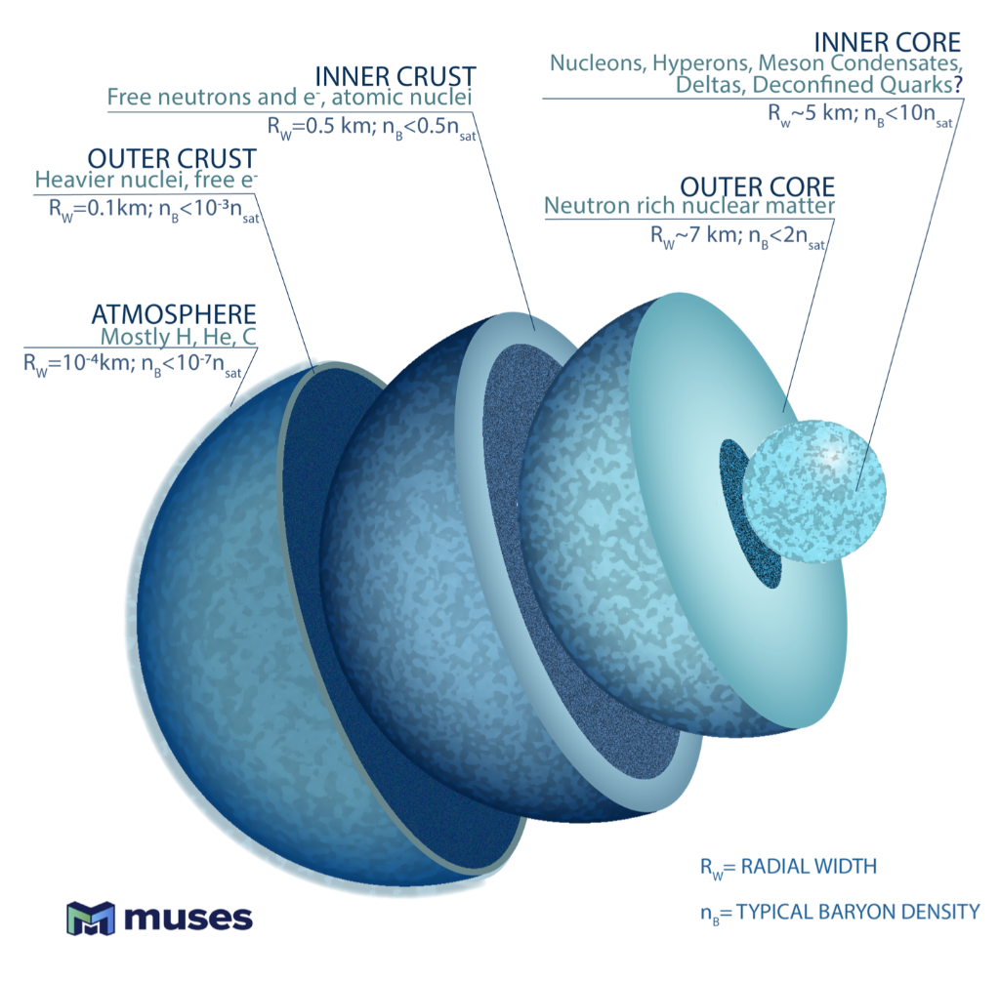
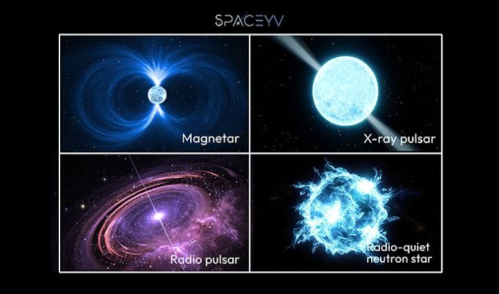
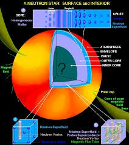
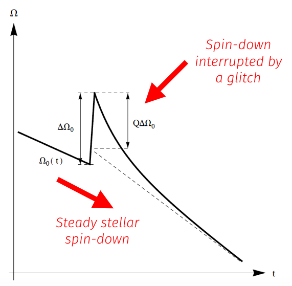
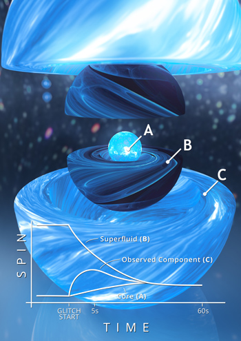

Neutron Star Group IIT Jodhpur
Dense-Matter Astrophysics, Nuclear Equations of State & Relativistic Compact Objects
A neutron star is an extraordinarily compact stellar remnant formed during the core-collapse supernova of a massive star ($M_{\text{ZAMS}} \approx 8 - 25 M_\odot$). It compresses roughly 1.4 to 2.1 solar masses into a sphere only 10 to 12 kilometers in radius.
Its interior reaches densities comparable to and above nuclear saturation density ($\rho_0 \approx 2.8 \times 10^{14}\text{ g/cm}^3$), making neutron stars unique cosmic laboratories connecting subatomic nuclear physics with Einstein's general relativity.
Formation of a Neutron Star
From Massive Progenitor Star to Core Collapse Supernova & Black Hole Boundary
The birth of a neutron star represents one of the most violent and energetic events in the universe:
- 1. Massive Star Life Cycle: Stars with initial masses between $8$ and $25 M_\odot$ fuse hydrogen into helium, then proceed through carbon, neon, oxygen, and silicon burning stages, forming an onion-like shell structure with an inert iron core.
- 2. The Iron Catastrophe: Iron-group nuclei ($^{56}\text{Fe}$) have the highest nuclear binding energy per nucleon. Further fusion is endothermic and cannot support the star against gravity.
- 3. Gravitational Core Collapse: Once the iron core surpasses the Chandrasekhar mass limit ($M_{\text{Ch}} \approx 1.4 M_\odot$), electron degeneracy pressure fails. The core plummets inward at $23\%\text{ of light speed}$ in under a second!
-
4. Photodisintegration & Neutronization: Gamma rays shatter iron nuclei, and energetic electrons are forced into protons via electron capture:
Neutronization Reaction & Neutrino Burst
- 5. Core Bounce Supernova: When central density reaches nuclear saturation ($\rho_0 \approx 2.8 \times 10^{14}\text{ g/cm}^3$), repulsive strong nuclear forces halt collapse. The core rebounds, driving a shockwave that expels outer stellar layers as a Type II supernova.


Structure of the Neutron Star
Concentric layers from the thin optical atmosphere down to the exotic quantum core (Picture 2 MUSES Model)


Vortex Pinning in Nuclear Pasta & Glitches
How quantized neutron vortices trapped in the inner crust trigger macroscopic pulsar glitches
In a rotating neutron star, the interior neutron superfluid carries angular momentum via an array of $\sim 10^{19}$ microscopic quantized vortex lines:
- Vortex Pinning: Vortex cores pass through nuclear pasta structures and lattice nuclei (as shown in Figure 5), where energy is minimized when pinned to nuclei ($F_{\text{pin}} \sim 10^{15}\text{ dyn/cm}$).
- Lag Buildup: As the crust continuously slows down due to magnetic dipole radiation ($\dot\Omega_{\text{crust}} < 0$), the pinned vortices cannot move outward. A rotational velocity lag $\delta\Omega = \Omega_{\text{sf}} - \Omega_{\text{crust}}$ builds up.
- Catastrophic Avalanche (The Glitch): When hydrodynamic Magnus force exceeds pinning strength ($F_M > F_{\text{pin}}$), an avalanche of billions of vortices unpins simultaneously, rushing outward and transferring angular momentum to the crust, producing the observed sudden spin-up jump $\Delta\Omega_0 / \Omega_0 \sim 10^{-6}$!

Nuclear Pasta Structures & Superfluid Vortex Pinning
At the base of the inner crust, competition between repulsive Coulomb energy and attractive nuclear surface tension frustrates normal spherical nuclei into exotic topological phases known as Nuclear Pasta. The geometry dramatically governs how quantized neutron vortices pin, slip, and avalanche during a pulsar glitch:


Neutron Star Cooling Curves
Realtime Thermal Evolution from 1 Year to 10⁶ Years with Observational Data
Born with an initial temperature of $T \sim 10^{11}\text{ K}$ ($10\text{ MeV}$), a neutron star undergoes distinct thermal epochs:
The core cools rapidly via neutrinos while the crust stays hot. A cooling wave travels from the core to the surface over $10 - 100\text{ years}$, plunging surface temperature down to $\sim 10^6\text{ K}$.
Neutrinos escape freely from the interior. Standard stars cool via Modified Urca ($n+n \to n+p+e^-+\bar\nu_e$). Massive stars exceeding Direct Urca threshold plunge $10^6 \times$ faster!
Neutrino emissivity fades as $T^8$; thermal photon radiation from the surface ($L_\gamma = 4\pi R^2 \sigma_{\text{SB}} T_s^4$) becomes the dominant cooling channel ($T_s \propto t^{-1/2}$).
Dark Kinetic Heating of Neutron Stars
How gravitational capture of ambient galactic dark matter sets a cosmic surface temperature floor
In standard stellar evolution theory, isolated neutron stars older than a few billion years should cool down to negligible temperatures ($T_s \ll 100\text{ K}$), rendering them completely dark and undetectable in optical and infrared bands.
However, as old neutron stars traverse the galactic dark matter halo ($\rho_\chi \approx 0.4\text{ GeV/cm}^3$), their immense gravitational potential ($C = GM/Rc^2 \approx 0.2$) captures ambient dark matter particles ($\chi$), creating a continuous thermal heating mechanism known as Dark Kinetic Heating.
Due to extreme gravitational pull, dark matter particles fall from galactic speeds ($v \sim 220\text{ km/s}$) and accelerate to relativistic escape velocity: $$\gamma_{\text{esc}} = (1 - 2C)^{-1/2} \approx 1.35 - 1.5$$
Upon entering the ultra-dense stellar core, dark matter particles scatter elastically against degenerate neutrons, depositing their immense relativistic kinetic energy into the core, heating the star from within.
Kinetic heating balances surface thermal radiation, establishing a universal heating floor of $1500 - 2500\text{ K}$ that persists indefinitely, preventing the star from ever freezing!
Because neutron stars have immense nuclear densities, they capture dark matter with extreme geometric cross-sections ($\sigma_{\chi n} \sim 10^{-45}\text{ cm}^2$). Searching for old, warm, isolated neutron stars in infrared bands with the James Webb Space Telescope (JWST) and future 30-meter telescopes (ELT, TMT) tests dark matter models across mass regimes (from sub-GeV light dark matter to multi-TeV WIMPs) far beyond the sensitivity reach of terrestrial underground laboratories!
Research Softwares & Data
Premier numerical relativity packages, equation-of-state databases, and observational data repositories
CompStar Online Supernovae Equations of State. The definitive online service providing thermodynamic tables for neutron stars, proto-neutron stars, and core-collapse supernovae across a wide grid of density, temperature, and proton fractions.
compose.obspm.frLangage Objet pour la RElativité Numérique. A high-precision C++ object-oriented library based on multi-domain spectral methods. Used worldwide to construct 3D configurations of rapidly rotating relativistic stars and binary neutron star mergers.
lorene.obspm.frDany Page's comprehensive 1D general-relativistic neutron star cooling code. Solves the coupled equations of energy transport and neutrino emissivity, incorporating superfluid pairing gaps, magnetic field evolution, and crust heating.
astroscu.unam.mx/neutrons/NSCoolDeveloped by Nikolaos Stergioulas. Computes models of rapidly rotating, relativistic neutron stars with realistic equations of state using the Komatsu-Eriguchi-Hachisu (KEH) numerical scheme. Calculates maximum mass, Keplerian spin limits, and moment of inertia.
gravity.phys.uwm.edu/rnsHigh-precision pulsar timing software packages capable of nanosecond timing residuals. Used by international pulsar timing arrays (NANOGrav, EPTA, PPTA) for detecting nanohertz gravitational waves and probing nuclear equations of state via Shapiro delays.
bitbucket.org/psrsoft/tempo2The Australia Telescope National Facility (ATNF) catalogue containing published parameters for over 3,300 known rotation-powered pulsars, millisecond pulsars, magnetars, and binary systems with live query filters.
atnf.csiro.au/research/pulsar/psrcatNASA's Neutron star Interior Composition Explorer (NICER) mission data on the International Space Station. Delivers pulse-profile modeling to simultaneously constrain mass and radius ($M$ and $R$) to within $5\%$.
heasarc.gsfc.nasa.gov/docs/nicerGravitational Wave Open Science Center. Open-access strain data, tutorials, and parameter estimation posteriors for binary neutron star mergers (such as GW170817 and GW190425) and neutron star-black hole coalescences.
gw-openscience.orgOur Research Group
Theoretical astrophysics, dense nuclear and quark matter, pulsar glitch mechanisms, and compact star phenomenology
Group Citation & Research Impact Statistics
Indexed on Google Scholar & INSPIRE-HEPGroup Members & Researchers
Astrophysics & Dense Matter Research Team · Department of Physics, IIT JodhpurResearch Specialization: Dense matter equations of state, magnetars and strongly magnetized relativistic matter, strange quark matter, hadron-quark phase transitions, hyperon bulk viscosity, and relativistic compact stars.
Research: Dense matter EOS with hyperons & $\Delta$-resonances, tidal deformability constraints, PREX-2 direct Urca implications, and magnetized compact stars.
Primary Research: Strange Quark Matter, quark-hadron phase transitions, universal relations for compact stars with exotic degrees of freedom, and dark-matter admixed neutron stars.
Research: $\Delta$-resonances in dense matter, Bayesian inference of EOS with antikaon condensation, $r$-mode stabilization in rotating hyperon stars, and gravitational-wave implications (GW190814).
Research: Neutron star cooling with $\Delta$-dUrca processes, modeling large pulsar glitches with core superfluidity in hybrid stars, and relativistic dense-matter thermal transport.
Research: Kaon-meson coupling from SU(3) flavour symmetry, antikaon condensed dense matter in neutron stars (JCAP), and Bayesian model comparison of nucleonic and hyperonic compositions.
Research Focus: Investigating Dibaryons (such as the $d^*(2380)$ hexaquark resonance and $H$-dibaryon) in neutron star matter, dense equations of state, and their implications on compact star structures and maximum masses.
Former MSc Thesis Students / Alumni
Graduated master's thesis researchers from our IIT Jodhpur laboratory, now pursuing doctoral research in Virginia, USA:
Thesis Research: Investigated Dark Matter in compact stars, non-radial quadrupolar oscillation modes ($f$-modes, $p$-modes), and two-fluid general relativistic equations of state.
Thesis Research: Investigated Ambipolar Diffusion in neutron stars and universal relations for compact stars with exotic degrees of freedom.
Group Publications & Preprints
Click "Copy BibTeX" for instant citation formattingInvestigates general relativistic thermal evolution of neutron stars incorporating $\Delta$-isobar direct Urca processes ($\Delta \to n + e^- + \bar\nu_e$). Demonstrates how $\Delta$-dUrca dramatically accelerates neutrino emissivity and reconciles rapid cooling observations with mass-radius constraints.
Proposes a multi-component hybrid star framework coupling core and inner-crust nuclear pasta superfluidity to explain anomalously giant pulsar glitches ($\Delta\Omega/\Omega \sim 10^{-5}$) exceeding crustal moment-of-inertia budgets.
Examines hyperon bulk viscosity damping of gravitational-radiation driven $r$-mode instabilities. Identifies spin frequencies allowing the secondary compact object of GW190814 ($2.59 M_\odot$) to be a rapidly rotating hyperonic neutron star.
Derives kaon-meson coupling constants strictly based on SU(3) flavour symmetry to investigate $s$-wave $K^-$ and $\bar{K}^0$ condensation in cold dense matter, evaluating softening effects on neutron star maximum mass and tidal deformability.
Analyzes the early appearance of $\Delta$-isobars in nucleonic matter under unified relativistic mean-field models, comparing resulting radii ($R_{1.4}$) and tidal deformabilities against NICER and LIGO/Virgo limits.
Employs a two-fluid general relativistic formalism to compute quadrupolar non-radial fundamental ($f$) and pressure ($p$) oscillation modes in neutron stars admixed with self-interacting fermionic dark matter.
Performs a Bayesian parameter inference conditioning antikaon optical potentials ($U_K$) against multi-messenger observational constraints, quantifying the threshold density for $K^-$ condensation.
Investigates I-Love-Q and $f$-mode universal relations across equations of state containing hyperons, $\Delta$-resonances, and dark matter, demonstrating that EOS universality holds robustly despite exotic phase transitions.
Analyzes the proton fraction $x_p$ and the opening threshold of the Direct Urca neutrino cooling process using nuclear symmetry energy parameters constrained by the PREX-2 lead radius measurement.
Constructs relativistic mean-field equations of state under intense magnetic fields ($B \sim 10^{18}\text{ G}$), evaluating Landau quantization of protons, hyperons, and $\Delta$-baryons in magnetars.
Investigates hyperon populations and equations of state in dense matter subject to strong quantizing magnetic fields, demonstrating how anomalous magnetic moments and field-induced shifts modify the maximum mass and composition.
Calculates the non-leptonic weak interaction bulk viscosity in hyperon-rich neutron star cores under quantization from strong magnetic fields, establishing dissipation timescales for stellar oscillations.
Investigates combustion front velocity and phase transition from metastable nuclear matter to strange quark matter under strong magnetic fields, exploring sudden spin-up jumps and energy releases.
Astrophysics Outreach & EOS Hub
Premier online repositories for neutron star equations of state, community code pipelines, and weekly-updated conference agendas
Bridging Nuclear Theory with Global Astrophysics
Neutron star physics relies on open science, community-standard equations of state, and global observational data. This hub gathers essential digital infrastructure for researchers, students, and educators studying the dense-matter equation of state (EOS), relativistic numerical relativity, and pulsar timing.
Below you will find curated portals for EOS tables, open-source relativistic codes, and an international conference schedule that is updated weekly with upcoming workshops, symposia, and call-for-papers in nuclear astrophysics.
Essential Equation of State (EOS) Portals & Tools
Microphysics Tables · Relativistic TOV SolversCompStar Online Supernovae Equations of State. The standard international repository providing standardized, thermodynamic microphysical tables across wide grids of baryon density ($n_B$), temperature ($T$), and proton fraction ($Y_p$). Essential for core-collapse supernovae, proto-neutron stars, and binary mergers.
Modular Unified Solver for the Equation of State. An NSF-funded multi-institutional effort developing open-source cyberinfrastructure that calculates dense-matter equations of state across finite temperature and density, incorporating crossover phase transitions from hadronic to deconfined quark matter.
Object-Oriented Scientific Computing Library. Maintained by Andrew Steiner. Provides robust C++ classes for dense matter equations of state, Tolman-Oppenheimer-Volkoff (TOV) relativistic integrations, Bayesian mass-radius posterior inversions, and crust-core interfaces.
Langage Objet pour la RElativité Numérique. Spectral methods library for constructing rapidly rotating axisymmetric and triaxial relativistic compact stars, magnetized equilibrium states, and binary neutron star initial data configurations.
Dany Page's Relativistic Thermal Evolution Code. Solves the coupled equations of energy transport and neutrino emissivity in general relativity, accounting for pairing critical temperatures ($T_c$), superfluid gaps, magnetic field decay, and crust heating.
Gravitational Wave Open Science Center. Public strain data, parameter estimation posteriors, and Python/Jupyter tutorials for binary neutron star mergers (GW170817, GW190425) and neutron star-black hole systems (GW190814, GW200105).
Neutron star Interior Composition Explorer. High-precision X-ray timing data on the International Space Station, delivering simultaneous mass and radius measurements for millisecond pulsars (PSR J0030+0451, PSR J0740+6620, PSR J0437-4715).
Australia Telescope National Facility. Global database compiling measured period ($P$), period derivative ($\dot{P}$), surface magnetic field ($B_s$), characteristic age ($\tau$), and dispersion measures for over 3,300 pulsars.
Upcoming Conferences & Workshops
International gatherings on nuclear astrophysics, dense QCD matter, pulsar glitches, and compact objects.
The flagship international conference covering high-energy nuclear collisions, the QCD phase diagram, strange quark matter, and high-density hadron-to-quark crossover transitions relevant to neutron star inner cores.
Focuses on dense matter equations of state, microphysical models of hyperons and $\Delta$-isobars, nuclear pasta crusts, and extracting nuclear parameters from gravitational wave observations and pulsar glitches.
Multi-week thematic workshops gathering world-leading theoretical physicists to solve core problems in neutron star crusts, nuclear pasta, neutrino transport, and multi-messenger constraints on nuclear symmetry energy.
Focused workshops hosted at the European Centre for Theoretical Studies in Nuclear Physics, covering hypernuclear physics, antikaon condensation, transport properties, and cooling curves in extreme astrophysical environments.
International COST Action conference uniting astrophysicists, nuclear theorists, and gravitational-wave observers to synthesize data from radio pulsars, magnetar flares, NICER X-ray modeling, and LIGO-Virgo-KAGRA detections.
The primary Indian national conference in nuclear and particle physics, featuring dedicated oral and poster sessions on dense nuclear matter, equations of state, and astrophysical compact stars.